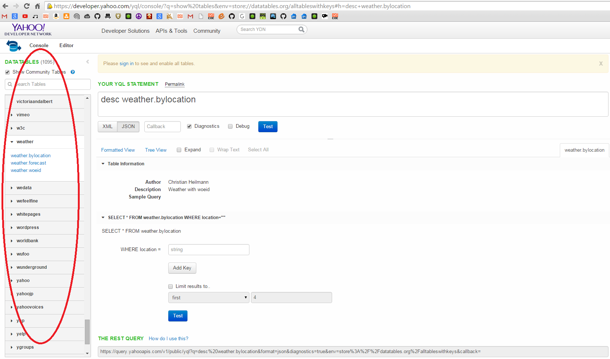
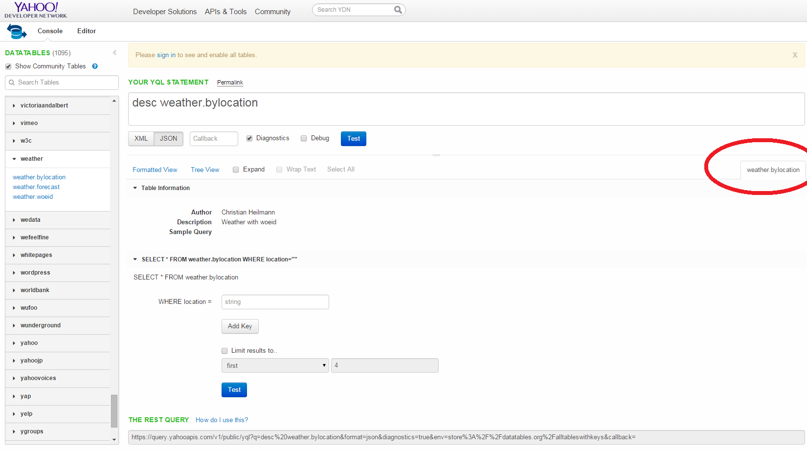
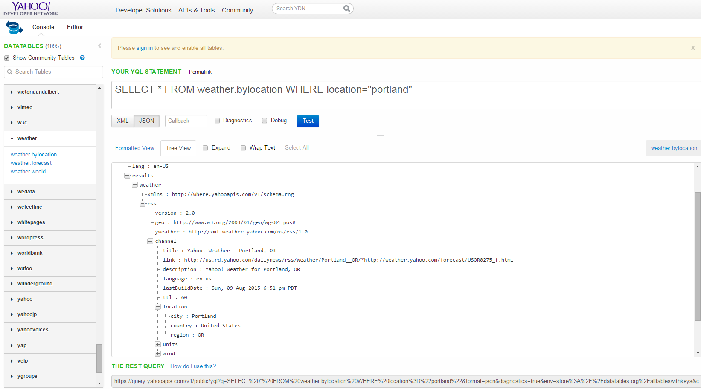

Recap
If you've gotten this far, then by now you should understand the simplicity of YQL, and also it's ability to
dispense information for developers. We went through 2 different queries, one for creating a craigslist search application, and one for creating
a stock market information application. Let's go over the steps one more time to really put the nail in the coffin.
Step 1: Find your table
The first step in both examples was to find the right table to query for. If you are using a craiglist search, then
find the craigslist search table. If you are making a weather application, go down to yahoo's weather table instead.

Step 2: Learn the table query conditions
You know by now that tables in YQL are slightly different when it comes to their conditions to query. Thus, many times
the query statement will differ between tables. You can easily learn your table's query instructions by clicking on the table's name located at the circled
location of the screen. The Image below demonstrates where. Once the tab is opened, you can see the different requirements in a form allowing you to learn
how to query for that table.

Step 3: Response type and Tree form View
After you understand how to query your table, Pick your response type (JSON/XML) and use the tree form view
to easily understand how the response should be parsed.

Step 4: REST QUERY link
Lastly, once you are satisfied with the information you are getting from your response, partition the
REST QUERY link on the bottom to use in your application for the response.
And that's it! If you followed the guide, you should now be able to create YQL queries and retrieve a plethora of information to use for your
web application. The possibilities are endless with over 1000 different tables that you have access to with Yahoo. I'd like to thank you for reading
my guide, and I hope that it helped to orient yourself to YQL and understand how you can use YQL for your next web application.